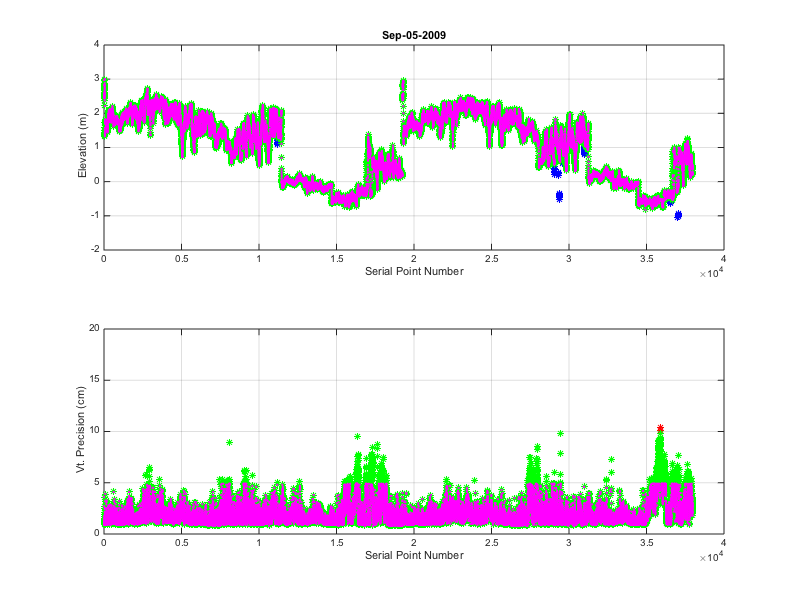
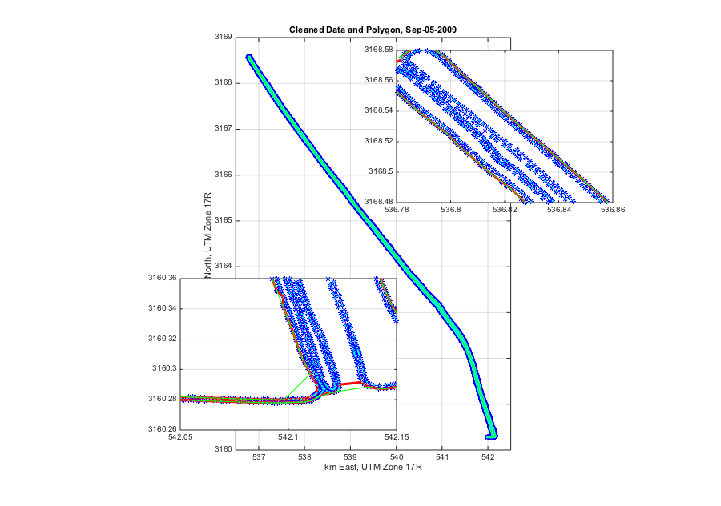
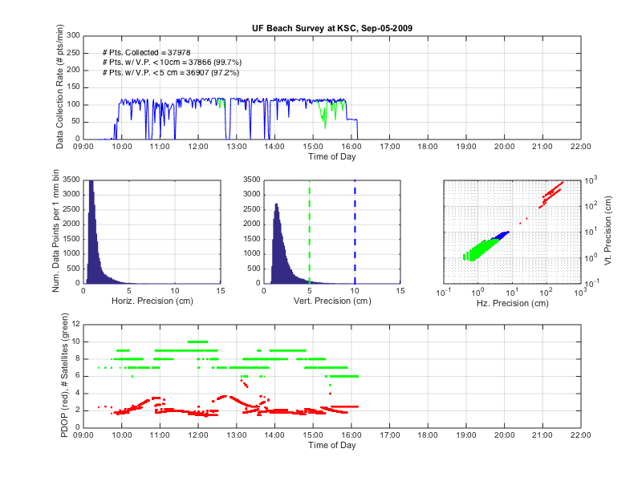

rtkCpCnvDataPrep00_Run.m
Contents
Code Purpose
This is the "run" script that enacts the various tasks of rtk-gps data preparation (hence, 'DataPrep' in the code title) for UF's 5 year monthly measurements of beach bathymetry at NASA-Kennedy Space Center (KSC) during the time period from May 2009 through May 2014.
This script: (1) allows the user to identify the dates of the field surveys to prep for detailed analysis, (2) identifies the relevant paths and directories for inputs and outputs, and (3) runs a loop that calls two functions - one that imports the text data saving it to a number of variables in a .mat file, and one that performs some basic display of data collection statistics.
Developed and documented by pna at UF during summer of 2016
Close and Clear
Start wit a clean slate.
close all,clear all
Identify Survey Dates to be Imported, Saved, and DCS-ed
Below, commented out, are some cell arrays containing strings of dates to be imported and prepped by the loop in this function.
sd={'09_05_06' '09_05_07' '09_05_24' '09_05_28' '09_06_06' '09_06_07' ... '09_07_06' '09_07_07' '09_08_01' '09_08_02' '09_09_05' '09_10_05' ... '09_11_06' '09_11_07' '09_12_01'};
% sd={'10_01_03' '10_01_31' '10_02_28' '10_05_01' '10_05_02' '10_05_27' ... % '10_07_25' '10_07_28' '10_07_31' '10_08_28' '10_10_02' '10_10_03' ... % '10_10_09' '10_10_24' '10_10_25' '10_11_20' '10_12_21'}; sd={'09_09_05'};
Identify Paths and Directories
genl_path='/Volumes/ls-geo-adams/Geo-Adams-Share/Data/Data01_RTK/';
genl_path='/Users/pna/Dropbox/Data/Data01_CpCnv/'; raw_dir='RTK_Survey_ReOrg_CPB/'; clean_dir='RTK_Survey_Clean_PNA/';
Run the Loop
for j=1:length(sd) disp(sprintf(['\n' 'Working on Survey ID ' sd{j}])) disp(sprintf(['\n' 'Running Import fcn...\n'])) rtkCpCnvDataPrep01_Import(sd{j},genl_path,raw_dir,clean_dir) disp(sprintf(['\n' 'Running DCS fcn...\n'])) rtkCpCnvDataPrep02_DCS(sd{j},genl_path,raw_dir,clean_dir) end
Working on Survey ID 09_09_05 Running Import fcn... 2.7 sec = imported DOP 22.1 sec = imported r13 PTS (total=24.8 sec) 21.1 sec = imported r64 PTS (total=45.9 sec) 0 sec = corrected r13 PTS (total=45.9 sec) 0 sec = corrected r64 PTS (total=45.9 sec) 0 sec = merged data (total=45.9 sec) 0 sec = cleaned data (total=46 sec) 2.2 sec = bounded data (total=48.2 sec) 1.2 sec = plotted data (total=49.4 sec) 1.2 sec = saved data (total=50.6 sec) 58.3 sec = printed graphics (total=108.9 sec) Running DCS fcn... 1 sec = .mat file loaded 0 sec = variable names converted (total=1 sec) 1.1 sec = time formats converted (total=2.1 sec) 0.6 sec = plots plotted (total=2.8 sec) 19.4 sec = plots printed to graphics files (total=22.1 sec)  